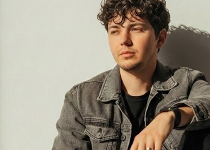

Cruger Corp no es producto de la improvisación, sino el resultado de más de una década de investigación, desarrollo e integración de múltiples disciplinas. Fundada por Angel Cruger, la firma nace de una visión polímata que entiende que la verdadera seguridad tecnológica requiere tanto de rigor científico como de una profunda comprensión de la interacción humana.
La base operativa de Cruger Corp se sustenta en años de desarrollo de sistemas en entornos de alta fricción. La experiencia de su fundador abarca desde la creación de plataformas geoespaciales autónomas (offline-first) hasta el diseño de arquitecturas cognitivas y metodologías de inteligencia para la defensa de datos (Doctrina Dark Zone). Este bagaje técnico está respaldado por investigaciones formales documentadas (DOIs) enfocadas en la optimización heurística y la soberanía de la información.
Esta trayectoria de ingeniería tiene sus raíces operativas en proyectos de desarrollo de plataformas iniciados en 2016, como MOVAIL, PMS (Project MIRACLE System), A.R.I entre otros. Las bases algorítmicas y protocolos de seguridad creados en ese entonces han evolucionado y hoy se integran directamente como el cimiento de los próximos proyectos tecnológicos de la firma.
Para sostener este nivel de innovación, la empresa cuenta con un respaldo académico ininterrumpido que incluye más de 100 cursos certificados en áreas tecnocientíficas, cinco diplomados entre los que se incluye Inteligencia de Negocios (BI), Cloud Computing, BIG DATA, e Informática y una Especialidad Operativa en Tratamiento de DATOS (actualmente cursando una segunda Especialidad en IoT e I.A.), garantizando una actualización absoluta frente a las amenazas modernas.
Lejos de limitarse al código y la criptografía, la trayectoria de Angel Cruger se complementa con casi diez años de experiencia en la dirección creativa, la ilustración y la divulgación digital. A través de la gestión de estudios multimedia y proyectos culturales de largo alcance, ha cultivado una capacidad excepcional para la comunicación visual, el diseño de identidad y la conexión con audiencias masivas.
A lo largo de su carrera, Angel experimentó de primera mano las deficiencias y la rigidez de las estructuras corporativas tradicionales. Mientras el mercado laboral fluctuaba, mantuvo un régimen de capacitación autodidacta implacable, forjando una disciplina de estudio en las horas donde el resto se detenía. Sin embargo, el verdadero catalizador de Cruger Corp no fue solo el conocimiento técnico, sino un punto de inflexión profesional: la confrontación directa con sistemas laborales estancados que penalizaban la proactividad y el talento.
Una ruptura abrupta e injustificada con el modelo de empleado tradicional provocó una profunda reestructuración personal y operativa. Lo que inicialmente se presentó como un escenario de desgaste emocional y adversidad, se transformó en la resiliencia necesaria para dar el salto definitivo. En lugar de permitir que su potencial siguiera siendo minimizado en una cadena corporativa, Angel decidió canalizar esa década de preparación silenciosa para fundar una firma disruptiva. Esta vivencia forjó un pilar inquebrantable en la filosofía de la empresa: el verdadero talento, cuando encuentra crecimiento y se siente parte integral de una visión, es capaz de construir ecosistemas trascendentes.
Es precisamente esta convergencia entre la ingeniería de sistemas complejos, la resiliencia probada y la sensibilidad del diseño humanista lo que define el ADN de nuestra empresa. Entendemos que la tecnología más robusta carece de valor si no responde a necesidades reales. Por ello, en Cruger Corp combinamos el determinismo matemático y la ciberseguridad defensiva con un enfoque ético, estructurado y centrado en el usuario, ofreciendo soluciones tecnológicas que no solo protegen, sino que trascienden.